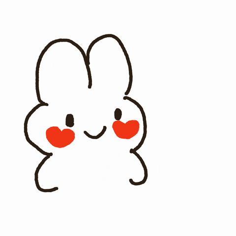

Henlo Baby!!
Dear Baby,
Today was supposed to be our monthsary. Believe me, I had plans for how we would celebrate. I created this simple website. I know I did something similar for your birthday last year, but I'm struggling to find ways to express my love to you because you're currently keeping your distance. I wanted to make it prettier, but I'm not feeling well right now. However, I decided to finish it because I wanted to make it up to you since we didn't celebrate our last monthsary. I didn't write this letter to reconcile with you. I wrote it because I want to tell you everything I feel about you while I still have the chance.
The first time I saw you wearing that blue shirt, walking into your classroom, I was immediately attracted. You're the only woman who ever made me turn my head like that. You're the only girl who gave me the courage to talk to you. I wasn't looking for a relationship at the time; I was focused on myself and my own growth. I was done with love. But you changed that. You gave me the chance to love again. It took me a while to find your name. I sent you a friend request, but you didn't respond. I waited a week until I finally removed it because I felt embarrassed. Then, one random night, I had a rush of adrenaline and created that Spotify confession for you. I started in the middle of the night and finished at 3:00 in the morning. I was hesitant to send the link because I didn't know how you'd react. I just took the risk, and when I asked Kyle about it, he said, "I don't know, but I heard them talking and laughing about it." I didn't know how to react – were they making fun of me, or did you appreciate it? But when you responded to my message, I was so happy because you gave me the attention I craved. Then, I wrote a confession poem, and many of your classmates reacted to it. I was shy, but at least I expressed my feelings. That's when you gave me a chance to talk to you. We shared some thoughts and developed a small friendship in that short period. Until you decided to stop responding to me. That really broke my heart because I was so invested in you, willing to make things work even though we had different religions. But I never stopped wishing you good luck before exams. I still looked for you in crowds, wondering where you were. I tried to ignore you in person whenever I saw you because I didn't want to make things awkward, until we took a picture together. I was so happy! I hadn't planned to take a picture with you because I'd lost hope that you would ever be mine.
During our no-contact period, Kyle kept sending me messages from your group chat and some stolen pictures of you. It hurt to see them because I still liked you, but I had to accept that you didn't reciprocate my feelings. I realized that not everyone I like will like me back. I even started to think that love wasn't for me. You should have been my classmate much earlier, but I was too cowardly. I worried you'd think I was chasing you or something. Eventually, I found the courage to accept Glaiza Alicoben's offer to join your class. However, I didn't interact with you because I was too shy and awkward. I even started to become interested in Ley and began talking to her. Then, on February 14th, everything changed. I saw you walk into our classroom again and realized that you were the one I truly liked, the one I was ready to pursue. I had thought I was over you, but I was wrong. I began thinking about how to approach you and start a conversation. Rumors started circulating that Honrad had a girlfriend, and I kept wondering who she was. I really thought it was you because you two had been shipped together for a long time, and I completely lost hope. But the universe gave me a chance to reconnect with you when we became groupmates. It's funny because, of all the group projects that semester, we ended up in the same group for the very last one. That was the beginning of our story.
Throughout our relationship, I was so happy. You were my dream girl. I wanted you to be my last. I truly did. I gave you the kind of care many women crave from their boyfriends. I always wanted you to feel heard and seen. That's why, when you told me you didn't like something or felt uncomfortable—like when I has some other women following me on tiktok —I didn't hesitate to make changes because you were the most important person to me. I tried to learn how to love you the way you needed. Even on my busiest days, I tried to make time for you to help you with your academics because I wanted us to be successful someday. I wanted to see us both on that stage together. I always did that because, before our story began, we promised each other that we would be there "Together." Maybe I have some shortcomings. Perhaps I expressed my feelings too much, to the point that it put pressure on you. And sometimes, I expected too much, beyond what you could do, which made me sad. The biggest issue, I think, was my lack of trust in you. I always worried that you would find someone better than me. I'm truly sorry about that, and I hope you forgive me. I tried to change my ways, especially regarding the lack of trust and jealousy. I was working on it, but I didn't have enough time to show you because we ended our relationship. About the fist bump with Dar, I wasn't jealous that you would replace me with him. I was jealous because I hadn't seen your smile in a long time because of our constant arguments. I desperately wanted to see that smile and have fun with you again, to the point that I kept teasing you about it, and it ended badly. I really want to apologize for being childish sometimes. I know I was moody all the time. I just really wanted your hugs and kisses, your attention, your care—that's all. I don't need expensive gifts; I don't need anything else. I just wanted your presence, your love, your touch, and that was enough to make me feel better.
I really loved spending time with you. Your laugh and your genuine smile are constantly on my mind. I know that you also tried your best to make me feel heard and seen. But I was so blinded by my emotions regarding our last arguments because, in reality, we talked about them but didn't really make any changes. That's why, when the issue was triggered again, we were both hurt and hadn't moved on. There's really no one to blame for this breakup, so please stop blaming yourself. We both tried to love one another, but when it came to the hardships of our relationship, we handled them poorly. We were just kids trying to love, trying to make our partner feel appreciated. So please stop blaming yourself for what happened to us, because I also have my share of the blame. That's why I am truly sorry for what I have done. I am really sorry if I made you cry that night. I truly am sorry, baby, I really am, and I deeply regret it. I know I should have done a lot better.
Deep down, we both know we still want each other. You might not want to admit it, but you do. You're still scared to see me with someone else; you're still scared that you'll no longer see me at all. You're just scared that if we reconcile, we'll just go back to square one. That's a normal reaction, as I'm also scared that if we reconcile, I might fall short again, and I might lose you again. But I always keep this in mind: sometimes it takes painful experiences to make us change our ways. I 100% agree with that. At first, we won't make any changes; we're so blinded by our pride because we thought we were right, because we hadn't felt the kind of pain we're suffering now. Yesterday, I asked you how you felt about our separation and if you were happy. You said you wouldn't entertain that question anymore. But I know you're hurting. You want to be back in my arms even more than I want you in mine, but you're just scared, wounded that, at the end of the day, we'll just be hurting each other again. To be honest, I won't promise you a perfect relationship after this because no one has a perfect relationship. At some point, you'll argue over something small because you care about that person. But this time around, we have a valuable lesson because we've already felt this pain, and we don't want to go back to it. You keep saying that I should find someone else. Like I said, even if I found someone else, it wouldn't change anything because, at some point, me and her would go through this phase. I've always seen a relationship as a progression in our lives. In reality, we are moving forward; in reality, this relationship is moving forward. How? By hurting us and by learning from our mistakes so that we can treat each other better and grow closer. Yes, this is life. It's meant to bring us to our knees to the point that we want to give up, but in the end, we come back stronger, and that's what I want to happen in this relationship. Looking back at our story, at how I pursued you, the universe gave me many reasons to give up. It kept throwing challenges my way to stop pursuing you, but I didn't stop, and look where we are now.
I'm not saying you have to come back to me right now. If you want space and to focus on yourself, then I will give it to you, but I just want you to be honest with yourself. Stop forcing yourself to stop loving me. I want you to express your love with me again, until we find peace in my love. Until you find the warmth that my hugs gives you. If this is all about growing and focusing on studies, we can both do that, but together. We can still have our individuality, but at some point, we will still come back to one another. That's what I've always wanted, and that is why I don't want to give up on us. I really love you; I really do. But I just want you to realize that this relationship is a journey, and if we give up, we will just go back to the very start—the pain and the suffering. That is why I would rather fix this relationship again and again than enter another one.
Don't be scared about what our future holds if you come back to me. I will be here for you, always, with open arms and a heart full of love. We will face the challenges together, hand in hand, and I promise I will never, ever leave you behind. I'll be your constant, your safe harbor, and together, we'll build a future even more beautiful than we can imagine.
I saw your flaws, insecurities, trauma, and doubts. I noticed the way certain things make you tremble, but I still want you in my life. Because even as broken as you think you are, and as much of a burden as you think you are, I see an amazing, kind, beautiful, one-of-a-kind soul that needs to be loved harder than any other.
Happy Monthsary, Vinna. I love you.